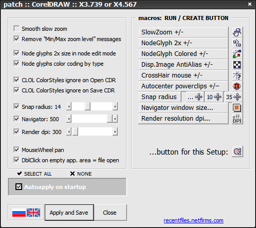
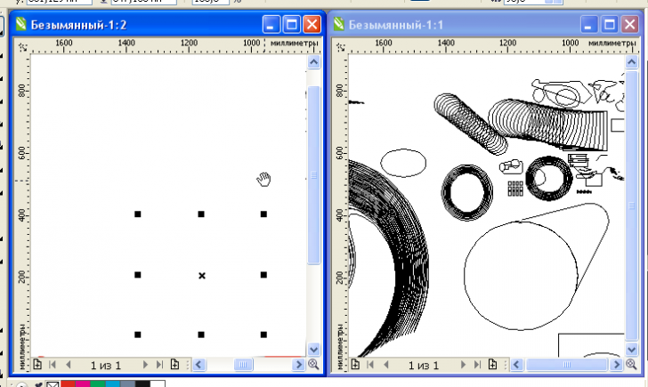

Обновление wx.SyncWindowsToggle
Dryundel / 06.10.2012, 23:36/00:41
Форум:
Прекрасный макрос wx.SyncWindowsToggle до сих пор не имеет поддержки X4, X5 и X6. Помогите адаптировать его к X6. В принципе на X6 он работает но с багами.
К сожалению автор на просьбы не отвечает, а работать в X3 уже как то не камильфо.
Ё!!!
Оно работает!!!
merci, sir.
wOxxOm, Вот уж СПАСИБО! х6 (32) все работает. Grand merci
WOW! Заработало! Супер! Спасибо wOxxOm.
Банзай! Работает. Оч-чень спасибы. А мозги нада подсмазать! ;)
Обнаружил небольшой глюк:
При перемещении рабочего поля инструментом "Рука"(H) пропадает изображение в том окне в котором перетаскиваешь (X6 32). Конечно это не страшно, можно и не пользоваться данным инструментом. Но все же, может возможно это исправить? А,wOxxOm, может скрипнешь еще немного?
Dryundel, я пользуюсь уже давно гораздо более удобной фишкой - таскаю окно нажатым колесом мышки, это делает макрос wx.PatchDraw:

В X6 не все хаки работают но таскалка - да.
о, тут мне подсказывают, что в Х6 наконец-то сделали это стандартной функцией (таскать нажатым колесом), молодцы, не прошло и 10 лет!
Спасибо за подсказку не знал про нажатие на колесико. Правда wx.PatchDraw в X6 для этого не нужен так как по умолчанию оно там есть.
Вот только описанный выше глюк это не исправляет. Как только перетащишь - картинка в активном окне пропадает. :(

у меня в Х6 не пропадает... (точнее появляется сразу как отпустишь кнопку)
Может быть это зависит от драйвера видеокарты?
В любом случае пока что нет времени на отладку.
Dryundel У меня на Х6 (32) также непрорисовивает... приходится часто после движения юзать Ctrl+W, главное что гвозди работают)). Быть может на 64 битах проблема отсутствует нет возможности проверить. Если код макроса открит можна повесить строку после каждого движения - происовка, но возможно не все так просто и я ошибаюсь так как ВБА невладею а просто предполагаю.
Страницы